library(tidymodels)
library(tidyverse)
theme_set(theme_bw())Supervised learning
1 Library and Data
color_RUB_blue <- "#17365c"
color_RUB_green <- "#8dae10"
color_TUD_pink <- "#EC008D"
color_DRESDEN <- c("#03305D", "#28618C", "#539DC5", "#84D1EE", "#009BA4", "#13A983", "#93C356", "#BCCF02")df_Bochum_KL <- read_csv("https://raw.githubusercontent.com/HydroSimul/Web/refs/heads/main/data_share/df_Bochum_KL.csv")1.1 Data description
The dataset is collected and reconstructed from DWD climate data (link to be added) and focuses on actual evapotranspiration. It contains 11 variables:
- RSK : daily precipitation sum [mm]
- RSKF : precipitation indicator (e.g. 1: rain / 4: snow) [-]
- VPM : mean vapor pressure [hPa]
- TMK : mean air temperature [°C]
- UPM : mean relative humidity [%]
- TXK : daily maximum air temperature [°C]
- TNK : daily minimum air temperature [°C]
- TGK : daily ground-level minimum temperature [°C]
- evapo_p : potential evapotranspiration [mm], calculated using a standard empirical method
- evapo_r : actual evapotranspiration [mm]
- soil_moist : soil moisture content [mm]
The dataset comprises 731 observations (two years) in Sation Bochum. While most meteorological variables are directly measured at station, potential evapotranspiration, actual evapotranspiration, and soil moisture are extracted from raster-based products.
This study is formulated as a supervised learning regression task. Actual evapotranspiration (evapo_r) is used as the target variable, while the remaining 10 variables serve as feature variables. A feature space of size 10 is considered moderate; therefore, no dimensionality reduction techniques such as PCA or UMAP are applied.
Basic exploratory data analysis and data tidying have already been completed during the data preparation phase. Consequently, the feature engineering stage is limited to basic transformations and feature standardization.
All regression models presented in the following sections use the same feature engineering rcp_Norm.
# Train–test split (75% / 25%)
split_Bochum <- initial_split(df_Bochum_KL, prop = 3/4)
df_Train <- training(split_Bochum)
df_Test <- testing(split_Bochum)
# Preprocessing recipe (normalize + PCA)
rcp_Norm <-
recipe(evapo_r ~ ., data = df_Train) |>
# step_mutate(RSKF = as.factor(RSKF)) |>
# step_dummy(RSKF) |>
step_YeoJohnson(all_numeric_predictors()) |>
step_normalize(all_numeric_predictors())2 Tuning Parameters
As discussed in the previous article, the basic workflow for model fitting using the tidymodels framework consists of the following steps:
- Split the data into training and test sets.
- Perform feature engineering using a recipe.
- Specify the model.
- Define the workflow by combining the recipe and the model specification.
- Fit the model to the training data.
- Generate predictions.
- Validate the model.
In standard model fitting, the hyperparameters of the modeling method remain fixed. However, these parameters can also be modified and optimized. This optimization process is referred to as tuning rather than fitting. When tuning is included, several steps in the workflow change:
Split the data into resampled sets, typically using cross-folds.
Perform feature engineering using a recipe.
Specify the model, leaving the hyperparameters unset by using the
tune()function so that they can be optimized.
Define a workflow designed for tuning.
Define the parameter ranges to be explored.
Specify the tuning search strategy, such as grid search or iterative search.
Conduct the tuning procedure.
Identify the best-performing parameter values.
Use the tuned parameters to construct the final model.
Fit the final model to the training data.
Generate predictions.
Validate the final model.
The aim of tuning is to identify the optimal set of hyperparameters for a given model. In general, two main search strategies are used to evaluate hyperparameter combinations: grid search and iterative (sequential) search.

2.1 Grid search
Grid search involves predefining a set of hyperparameter values and evaluating all possible combinations. The key design choices are how the grid is constructed and how many combinations are included. Grid search is often criticized for being computationally inefficient, especially in high-dimensional hyperparameter spaces. However, this inefficiency mainly arises when the grid is poorly designed. With a well-chosen grid, grid search can be effective and straightforward.
Typical variants include:
grid_regular(levels = 3): a structured grid with evenly spaced values for each hyperparameter
grid_random(size = 30): 30 randomly sampled combinations, which are not evenly spaced but often provide broader coverage of the parameter space
2.2 Iterative (sequential) search
Iterative or sequential search methods identify promising hyperparameter combinations step by step, guided by the results of previous evaluations. These methods adaptively explore the parameter space and can be much more efficient than grid search for complex or high-dimensional problems. Many nonlinear optimization algorithms fall into this category, although their performance can vary. In some cases, an initial set of hyperparameter combinations must be evaluated to initialize the search.
2.3 Manual search
When prior experience or guidance from the literature is available, manual search can also be effective. In this approach, expert knowledge is used to reduce the number of hyperparameters to tune or to restrict their plausible ranges. Although manual search is less systematic, it can substantially decrease computational cost and is often useful as a preliminary step before applying automated tuning methods.
2.4 Get (set) the range of hyperparameters
Before tuning a model, we usually need to define a reasonable range for each hyperparameter.
The tidymodels API already provides commonly recommended hyperparameter ranges for most machine-learning methods via the function extract_parameter_set_dials().
In many cases, the default ranges can be used directly for tuning. However, in some situations you may want to adjust them manually. This can be done with the update() function:
# 4. Hyperparameter grid (extracted from workflow)
param_tune_RF <- extract_parameter_set_dials(wflow_tune_RF)
# Update mtry with the actual number of predictors
param_tune_RF <- param_tune_RF |>
update(mtry = mtry(range = c(1, ncol(df_Train) - 1)))For grid search, all hyperparameter combinations must be predefined. Therefore, it is necessary to explicitly specify the parameter ranges in advance.
For iterative search methods such as tune_bayes(), specifying the range beforehand is not strictly required, because the function can automatically infer suitable ranges. However, if you want to control or restrict the search space, you can still explicitly define the ranges using the param_info argument.
2.5 Hyperparameter ranges
tidymodels provides a very complete workflow for hyperparameter tuning. In particular, it collects reasonable default ranges for hyperparameters, which can be used directly in most cases. However, to tune parameters more efficiently, tidymodels sometimes applies transformations to hyperparameters, especially compared to defining them manually.
These transformations are important because tuning is often performed on a transformed scale (e.g., log scale) rather than on the original parameter scale.
You can inspect the transformations applied to each hyperparameter as follows:
param_tune_RF$object3 Linear regression
Linear regression is a classical supervised learning method used to estimate the linear relationship between one or more predictors and a continuous outcome variable.
In practice, most applications involve several predictors, so the standard approach is the multiple linear regression model, where the response is modeled as a linear combination of all predictors.
For predictors \(x_1, x_2, ..., x_p\), the model is:
\[ y = \beta_0 + \beta_1 x_1 + \beta_2 x_2 + \cdots + \beta_p x_p + \varepsilon \]
where
- \(y\) is the outcome,
- \(\beta_0\) is the intercept,
- \(\beta_j\) are the coefficients showing the contribution of each predictor,
- \(\varepsilon\) is the random error.
The goal is to estimate the coefficients \(\beta\) so that the model predicts \(y\) as well as possible.
# define linear regression model using base R lm engine
mdl_Mlm <-
linear_reg() |>
set_engine("lm")
# build workflow: preprocessing recipe + model
wflow_Norm_Mlm <-
workflow() |>
add_recipe(rcp_Norm) |>
add_model(mdl_Mlm)
# fit the workflow on training data
fit_Norm_Mlm <-
wflow_Norm_Mlm |>
fit(data = df_Train)
# generate predictions on test data
pred_Mlm <-
predict(fit_Norm_Mlm, df_Test) |>
bind_cols(df_Test |> dplyr::select(evapo_r))
# evaluate model performance (e.g. RMSE, MAE, R²)
metrics(pred_Mlm, truth = evapo_r, estimate = .pred)# A tibble: 3 × 3
.metric .estimator .estimate
<chr> <chr> <dbl>
1 rmse standard 4.54
2 rsq standard 0.784
3 mae standard 3.19 # observed vs. predicted scatter plot
ggplot(pred_Mlm, aes(x = evapo_r, y = .pred)) +
geom_point(alpha = 0.6, color = color_RUB_blue) +
geom_abline(
intercept = 0, slope = 1,
linetype = "dashed", color = color_TUD_pink
) +
labs(
x = "Observed evapo_r",
y = "Predicted evapo_r"
)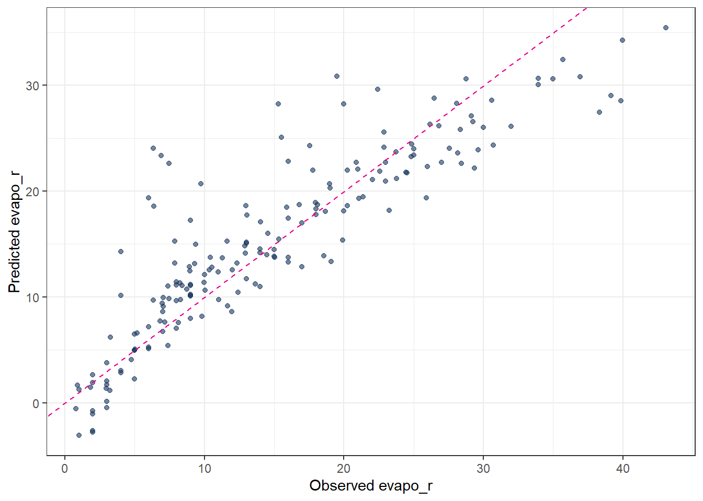
4 Regularization
For ordinary linear regression (using the lm engine), there are no hyperparameters to tune. However, once regularization is introduced (ridge, lasso, or elastic net), an additional penalty term is added to the loss function in order to prevent overfitting.
In regression, instead of minimizing only the training error (e.g. the sum of squared residuals), the objective function becomes
training error + penalty on model parameters
This penalty constrains the size or structure of the regression coefficients and serves three main purposes:
- reduce overfitting by preventing the model from fitting noise in the training data
- improve generalization performance on unseen data
- mitigate multicollinearity by stabilizing coefficient estimates
More specifically:
- Ridge regression applies an L2 penalty (the sum of squared coefficients). It shrinks coefficients toward zero but typically does not set them exactly to zero.
- Lasso regression applies an L1 penalty (the sum of absolute coefficients). This can force some coefficients to become exactly zero, effectively performing variable selection.
- Elastic net combines L1 and L2 penalties, providing a balance between sparsity (lasso) and stability (ridge).
In summary, regularization controls model complexity by penalizing large or unstable parameter values during model fitting.
4.1 Regularization hyperparameters
Regularized regression models must control how strong the penalty is and which type of penalty is applied. These controls are implemented as hyperparameters, most commonly:
penalty(λ): controls the overall strength of regularization
mixture(α): controls the type of regularization- α = 0 corresponds to ridge regression
- α = 1 corresponds to lasso regression
- 0 < α < 1 corresponds to elastic net
- α = 0 corresponds to ridge regression
Different regression methods therefore differ in their loss functions and regularization strategies. The key distinction from ordinary linear regression is the presence of these hyperparameters (penalty and mixture), which determine the amount and form of regularization applied to the model.
4.2 Ordinary Least Squares (OLS)
- No regularization → no hyperparameters.
- The solution is obtained analytically by minimizing the sum of squared residuals.
\[ \min_{\beta} \sum_{i=1}^n (y_i - \hat{y}_i)^2 \]
Because there is no penalty term, the model can overfit when predictors are highly correlated.
4.3 Ridge Regression (L2 penalty)
- Introduces one hyperparameter:
penalty(lambda): strength of coefficient shrinkage
mixtureis fixed to 0, meaning pure L2 regularization.
\[ \min_{\beta} \left( \sum_{i=1}^n (y_i - \hat{y}_i)^2 + \lambda \sum_{j=1}^p \beta_j^2 \right) \]
Large lambda → strong shrinkage.
Coefficients approach zero but never become exactly zero.
4.4 Lasso Regression (L1 penalty)
- Also uses one hyperparameter:
penalty(lambda): controls how strongly coefficients are pushed toward zero
mixtureis fixed to 1, meaning pure L1 regularization.
\[ \min_{\beta} \left( \sum_{i=1}^n (y_i - \hat{y}_i)^2 + \lambda \sum_{j=1}^p |\beta_j| \right) \]
Large lambda → many coefficients become exactly zero → feature selection.
4.5 Elastic Net Regression (combined L1 + L2)
- Uses two hyperparameters:
penalty(lambda): global strength of shrinkage
mixture(alpha): balance between L1 and L2- alpha = 0 → ridge
- alpha = 1 → lasso
- 0 < alpha < 1 → mixture
- alpha = 0 → ridge
\[ \min_{\beta} \left( \sum_{i=1}^n (y_i - \hat{y}_i)^2 + \lambda \left[ \alpha \sum_{j=1}^p |\beta_j| + (1-\alpha) \sum_{j=1}^p \beta_j^2 \right] \right) \]
Elastic Net is useful when predictors are correlated and when both shrinkage and feature selection are desired.
4.6 Tuning Parameters of regularization
Summary of Hyperparameter Settings:
| Method | penalty (lambda) | mixture (alpha) | Regularization |
|---|---|---|---|
| OLS | not used | not used | none |
| Ridge | yes | 0 | L2 |
| Lasso | yes | 1 | L1 |
| Elastic Net | yes | 0 < α < 1 | L1 + L2 |
In practice, penalty and mixture are usually selected using cross-validation, since the optimal values depend on the dataset.
- Split the data into resampled sets Define the parameter “Number of partitions”
vwhich means how many subsets (folds) the dataset is split into for cross-validation.
In v-fold cross-validation:
- The data are divided into v roughly equal-sized parts (folds).
- The model is trained v times.
- Each time, 1 fold is held out as validation data, and the remaining v−1 folds are used for training.
- The performance is averaged over the v runs.
## folds ---------
set.seed(111)
cv_folds_Norm <- vfold_cv(df_Train, v = 10)Feature engineering using a recipe
The feature engineering step is performed using a preprocessing recipe, which has already been defined in the previous section.Model specification with tunable hyperparameters
Next, the regression model is specified while leaving the hyperparameters unset by using thetune()function. This allows the hyperparameters to be optimized during the tuning process rather than fixed in advance. The model structure (e.g. linear regression with regularization) is defined at this stage, while the optimal values of the hyperparameters are determined later through the chosen tuning strategy.
## Model with tunable hyperparameters ------------------------------
mdl_tune_EN <-
linear_reg(
penalty = tune(), # lambda
mixture = tune() # alpha
) |>
set_engine("glmnet")- Define a workflow designed for tuning.
## Workflow -------------------------
wflow_tune_EN <-
workflow() |>
add_recipe(rcp_Norm) |>
add_model(mdl_tune_EN)- Define the parameter ranges to be explored
The ranges of the hyperparameters to be tuned must be specified before the tuning process. In most cases, reasonable default ranges are already stored within the model specification. These predefined ranges can be directly extracted using theextract_parameter_set_dials()function. This approach ensures that the tuning process starts from sensible and model-appropriate parameter bounds, while still allowing the ranges to be adjusted if prior knowledge or problem-specific considerations are available.
param_tune_EN <-
extract_parameter_set_dials(wflow_tune_EN)
param_tune_EN_final <-
param_tune_EN |>
finalize(df_Train)- Specify the tuning search strategy
The tuning search strategy determines how hyperparameter combinations are generated and evaluated. Common approaches include grid search and iterative (sequential) search.
For grid search, grid_regular() is often used. This function divides the predefined parameter ranges into a specified number of evenly spaced values using the levels argument. The full grid is then formed by evaluating all possible combinations of these values across the hyperparameters. A larger number of levels increases the resolution of the search but also raises the computational cost.
## Hyperparameter grid -------------
grid_EN <-
grid_regular(
param_tune_EN_final,
levels = 6
)- Conduct the tuning procedure.
set.seed(123)
tune_EN <-
tune_grid(
wflow_tune_EN,
resamples = cv_folds_Norm,
grid = grid_EN,
metrics = metric_set(rmse, mae, rsq),
control = control_grid(save_pred = TRUE)
)- Identify the best-performing parameter values.
## Show best hyperparameters -------
show_best(tune_EN, metric = "rmse")# A tibble: 5 × 8
penalty mixture .metric .estimator mean n std_err .config
<dbl> <dbl> <chr> <chr> <dbl> <int> <dbl> <chr>
1 0.01 0.62 rmse standard 3.82 10 0.136 Preprocessor1_Mod…
2 0.0000000001 0.62 rmse standard 3.83 10 0.133 Preprocessor1_Mod…
3 0.00000001 0.62 rmse standard 3.83 10 0.133 Preprocessor1_Mod…
4 0.000001 0.62 rmse standard 3.83 10 0.133 Preprocessor1_Mod…
5 0.0001 0.62 rmse standard 3.83 10 0.133 Preprocessor1_Mod…- Use the tuned parameters to construct the final model.
## Finalize model with best hyperparameters -------------------------
best_params_EN <- select_best(tune_EN, metric = "rmse")
wflow_final_EN <- finalize_workflow(wflow_tune_EN, best_params_EN)- Fit the final model to the training data.
fit_final_EN <- fit(wflow_final_EN, df_Train)- Generate predictions.
pred_final_EN <-
predict(fit_final_EN, df_Test) |>
bind_cols(df_Test |> dplyr::select(evapo_r))- Validate the final model.
metrics(pred_final_EN, truth = evapo_r, estimate = .pred)# A tibble: 3 × 3
.metric .estimator .estimate
<chr> <chr> <dbl>
1 rmse standard 4.54
2 rsq standard 0.784
3 mae standard 3.17 5 Decision Trees
Tree-based models are a class of nonparametric algorithms that work by partitioning the feature space into a set of smaller, non-overlapping regions with similar response values using a series of splitting rules. Predictions are obtained by fitting a simple model within each region, typically a constant such as the mean response value. These divide-and-conquer methods yield intuitive decision rules that are easy to interpret and visualize using tree diagrams [@MLR_Boehmke_2019].
One of the most widely used tree-based methods is the Classification and Regression Tree (CART) algorithm. CART first partitions the feature space into increasingly homogeneous subgroups and then applies a simple constant prediction within each terminal node. In this sense, tree-based regression can be viewed as a sequence of classification-like splits followed by local regression within each region.
A CART tree can be described in terms of a root node, internal nodes, branches, and leaf nodes. The model uses binary recursive partitioning, meaning that each internal node is always split into exactly two child nodes.
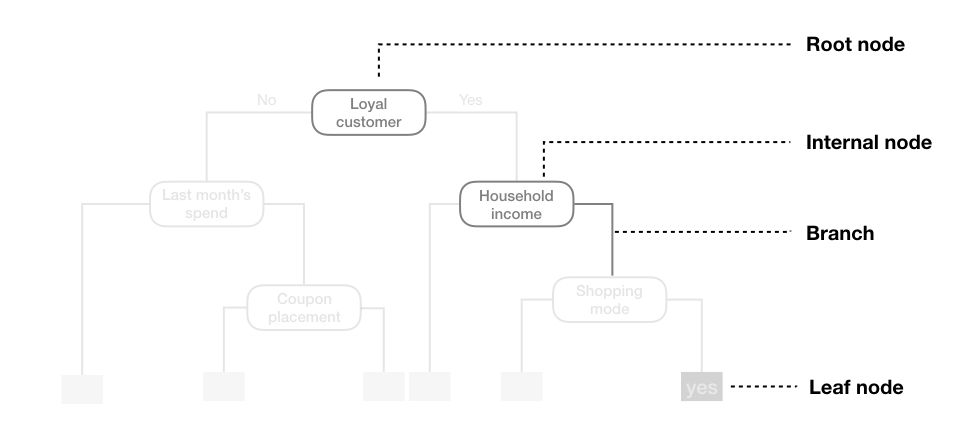
5.1 Hyperparameters
There are three main hyperparameters in a CART model:
cost_complexity(also calledcpor alpha)
This parameter controls the complexity of the tree by adding a penalty for each additional split. A higher value encourages simpler trees by pruning branches that provide little improvement in predictive accuracy, while a smaller value allows more complex trees to grow.tree_depth(ormax_depth)
This defines the maximum number of levels in the tree from the root node to the deepest leaf. Limiting tree depth helps prevent overfitting, especially when the dataset is small or noisy, by restricting the number of splits.min_n(ormin_samples_split)
This specifies the minimum number of observations that must be present in a node for it to be eligible for splitting. Larger values produce more generalized trees, while smaller values allow the tree to fit more detailed patterns in the data.
These hyperparameters determine the size, structure, and complexity of the tree and have a direct impact on its predictive performance. Proper tuning is crucial to achieve a balance between underfitting and overfitting.
5.2 Codes
# 2. Define tunable Decision Tree model
mdl_tune_DT <-
decision_tree(
cost_complexity = tune(), # pruning parameter (CCP)
tree_depth = tune(), # maximum depth
min_n = tune() # minimum number of data points in a node
) |>
set_engine("rpart") |>
set_mode("regression")
# 3. Workflow (recipe + model)
wflow_tune_DT <-
workflow() |>
add_recipe(rcp_Norm) |>
add_model(mdl_tune_DT)
# 4. Hyperparameter grid
set.seed(123)
grid_DT <- grid_random(
cost_complexity(range = c(-5, -0.5)), #
tree_depth(range = c(2, 5)),
min_n(range = c(2, 40)),
size = 30 # number of random grid combinations
)
# 5. Cross-validated tuning
set.seed(123)
tune_DT <-
tune_grid(
wflow_tune_DT,
resamples = cv_folds_Norm,
grid = grid_DT,
metrics = metric_set(rmse, rsq, mae),
control = control_grid(save_pred = TRUE)
)
# 6. Best hyperparameters
show_best(tune_DT, metric = "rmse")# A tibble: 5 × 9
cost_complexity tree_depth min_n .metric .estimator mean n std_err
<dbl> <int> <int> <chr> <chr> <dbl> <int> <dbl>
1 0.00110 5 27 rmse standard 3.61 10 0.210
2 0.00113 5 22 rmse standard 3.72 10 0.263
3 0.000692 4 13 rmse standard 3.94 10 0.223
4 0.0000291 4 31 rmse standard 4.02 10 0.242
5 0.000299 4 23 rmse standard 4.07 10 0.236
# ℹ 1 more variable: .config <chr>best_prams_DT <- select_best(tune_DT, metric = "rmse")
# 7. Final model with tuned hyperparameters
wflow_final_DT <-
finalize_workflow(wflow_tune_DT, best_prams_DT)
fit_final_DT <- fit(wflow_final_DT, df_Train)
# Predict
pred_final_DT <-
predict(fit_final_DT, df_Test) |>
bind_cols(df_Test |> dplyr::select(evapo_r))
# Metrics
metrics(pred_final_DT, truth = evapo_r, estimate = .pred)# A tibble: 3 × 3
.metric .estimator .estimate
<chr> <chr> <dbl>
1 rmse standard 3.55
2 rsq standard 0.873
3 mae standard 2.09 # Plot predicted vs observed
ggplot(pred_final_DT, aes(x = evapo_r, y = .pred)) +
geom_point(alpha = 0.6, color = color_RUB_blue) +
geom_abline(
intercept = 0,
slope = 1,
linetype = "dashed",
color = color_TUD_pink
) +
labs(
x = "Observed",
y = "Predicted"
)
The predicted results from a decision tree illustrate the “classification” concept clearly: each terminal node corresponds to a group of observations with a constant predicted value. However, the predictive accuracy may not always be satisfactory, especially for complex relationships in the data.
The final fitted decision tree can be visualized as follows. From the plot, it is evident that the predictor evapo_p is used multiple times at different levels of the tree. This suggests that evapo_p is a highly important variable in explaining the target variable.
# extract the fitted parsnip model from the workflow
fit_Tree <-
fit_final_DT |>
extract_fit_parsnip()
# extract the underlying rpart object
plot_Tree <- fit_Tree$fit
# plot the decision tree
rpart.plot::rpart.plot(plot_Tree)
In addition to the tree structure plot, a Variable Importance Plot (VIP) provides a complementary view. It ranks the predictors according to their contribution to the model and highlights which variables have the most influence on predictions.
vip::vip(fit_Tree, scale = TRUE)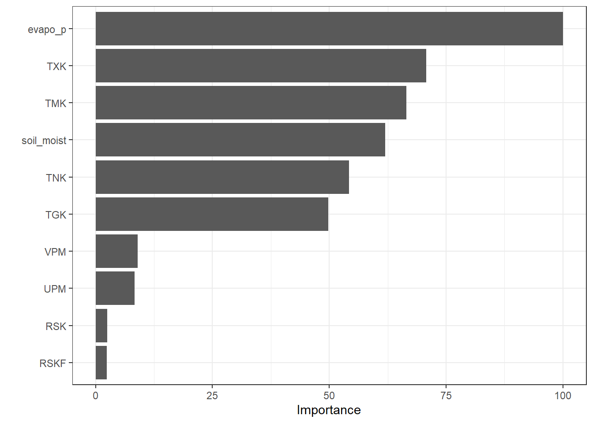
6 Random Forest
Random forest is an improved decision tree algorithm that builds an ensemble of many decision trees to enhance predictive performance and reduce overfitting. Instead of relying on a single tree, random forest aggregates the predictions from multiple trees, each trained on a different bootstrap sample of the data and using a random subset of predictors at each split. This combination of bagging (bootstrap aggregating) and feature randomness increases model stability, improves generalization, and reduces the variance associated with a single decision tree.
6.1 Hyperparameters
Random forest has several key hyperparameters that control the ensemble’s complexity and performance:
mtry
The number of predictors randomly sampled at each split. Smaller values increase tree diversity and reduce correlation among trees, while larger values allow stronger predictors to dominate splits.treesThe total number of trees in the forest. Increasing the number of trees usually improves stability and accuracy, but with diminishing returns beyond a certain point.min_nThe minimum number of observations required to split a node. Larger values produce simpler trees and reduce overfitting, while smaller values allow more detailed splits.
These hyperparameters determine the balance between bias and variance in the ensemble and are typically tuned to optimize predictive performance. Proper tuning ensures that the random forest captures important patterns while remaining robust to noise in the data.
6.2 Codes
# 2. Define tunable Random Forest model
mdl_tune_RF <-
rand_forest(
trees = tune(), # number of trees
mtry = tune(), # number of predictors sampled at each split
min_n = tune() # minimum node size
) |>
set_engine("ranger", importance = "permutation") |>
set_mode("regression")
# 3. Workflow (recipe + model)
wflow_tune_RF <-
workflow() |>
add_recipe(rcp_Norm) |>
add_model(mdl_tune_RF)
# 4. Hyperparameter grid (extracted from workflow)
param_tune_RF <- extract_parameter_set_dials(wflow_tune_RF)
# Update mtry with the actual number of predictors
param_tune_RF <- param_tune_RF |>
update(mtry = mtry(range = c(1, ncol(df_Train) - 1)))
# 5. Create grid
set.seed(123)
grid_RF <- grid_regular(
param_tune_RF,
levels = 3
)
# 6. Cross-validated tuning
set.seed(123)
tune_RF <-
tune_grid(
wflow_tune_RF,
resamples = cv_folds_Norm,
grid = grid_RF,
metrics = metric_set(rmse, rsq, mae),
control = control_grid(save_pred = TRUE)
)
# 7. Best hyperparameters
show_best(tune_RF, metric = "rmse")# A tibble: 5 × 9
mtry trees min_n .metric .estimator mean n std_err .config
<int> <int> <int> <chr> <chr> <dbl> <int> <dbl> <chr>
1 10 2000 2 rmse standard 2.18 10 0.142 Preprocessor1_Model09
2 10 1000 2 rmse standard 2.19 10 0.143 Preprocessor1_Model06
3 10 1000 21 rmse standard 2.42 10 0.144 Preprocessor1_Model15
4 10 2000 21 rmse standard 2.42 10 0.143 Preprocessor1_Model18
5 5 2000 2 rmse standard 2.44 10 0.169 Preprocessor1_Model08best_prams_RF <- select_best(tune_RF, metric = "rmse")
# 8. Final model with tuned hyperparameters
wflow_final_RF <-
finalize_workflow(wflow_tune_RF, best_prams_RF)
fit_final_RF <- fit(wflow_final_RF, df_Train)
# Predict
pred_final_RF <-
predict(fit_final_RF, df_Test) |>
bind_cols(df_Test |> dplyr::select(evapo_r))
# Metrics
metrics(pred_final_RF, truth = evapo_r, estimate = .pred)# A tibble: 3 × 3
.metric .estimator .estimate
<chr> <chr> <dbl>
1 rmse standard 2.43
2 rsq standard 0.938
3 mae standard 1.44 # Plot predicted vs observed
ggplot(pred_final_RF, aes(x = evapo_r, y = .pred)) +
geom_point(alpha = 0.6, color = color_RUB_blue) +
geom_abline(
intercept = 0,
slope = 1,
linetype = "dashed",
color = color_TUD_pink
) +
labs(
x = "Observed",
y = "Predicted"
)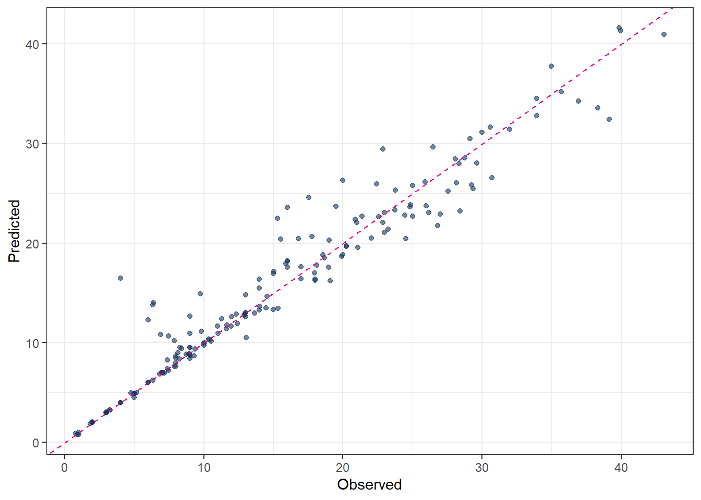
# extract the fitted parsnip model from the workflow
fit_RandomForest <-
fit_final_RF |>
extract_fit_parsnip()
# variable importance plot with scaled values
vip::vip(fit_RandomForest, geom = "col", scale = TRUE)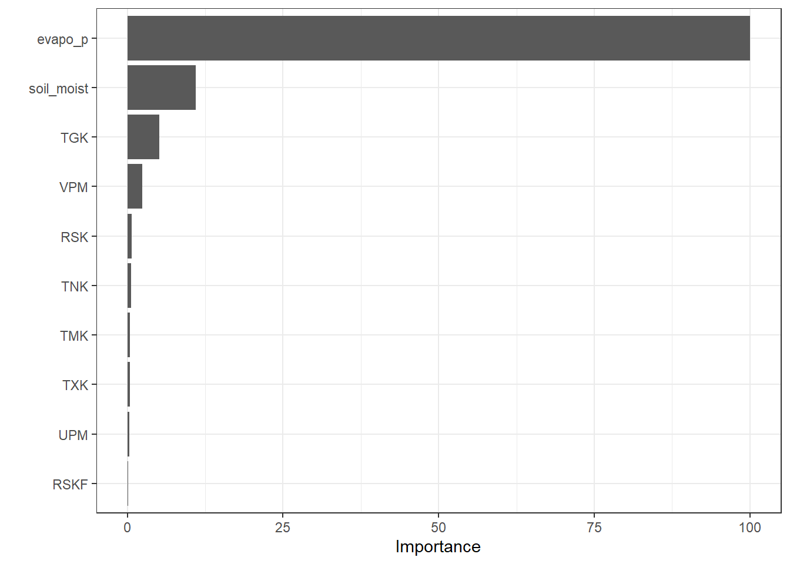
7 Gradient Boosting (GBOST)
The key idea of GBOST can be divided into two key concepts: boosting, which improves weak models sequentially, and gradient descent, which iteratively adjusts model parameters in order to minimize a cost (loss) function.
The GBOST method combines many simple models and is most effectively applied using decision trees (DT). In contrast to random forests, where trees are trained independently, GBOST builds trees sequentially. Each new tree is trained based on the previously trained trees, and the training direction is guided by the gradient of the loss function.
Boosting
The key idea of boosting is to add new models to the ensemble one after another. Boosting addresses the bias–variance trade-off by starting with a weak model (for example, a decision tree with only a few splits) and then sequentially improving performance. Each new tree focuses on correcting the largest mistakes made by the current ensemble, meaning that later trees pay more attention to training samples with large prediction errors.
- Base learners
Boosting is a general framework that can iteratively improve any weak learning model. In practice, however, gradient boosting almost always uses decision trees as base learners. Therefore, boosting is typically discussed in the context of decision trees.
- Training weak models
A weak model is one whose performance is only slightly better than random guessing. The idea behind boosting is that each model in the sequence slightly improves upon the previous one by focusing on the observations with the largest errors. For decision trees, weak learners are usually shallow trees. In gradient boosting, trees with 1–6 splits are most common.
- Sequential training with respect to errors
Boosted trees are trained sequentially. Each tree uses information from the previously trained trees to improve performance. In regression problems, this is typically done by fitting each new tree to the residuals of the current ensemble. By doing so, each new tree focuses on correcting the mistakes made by earlier trees.
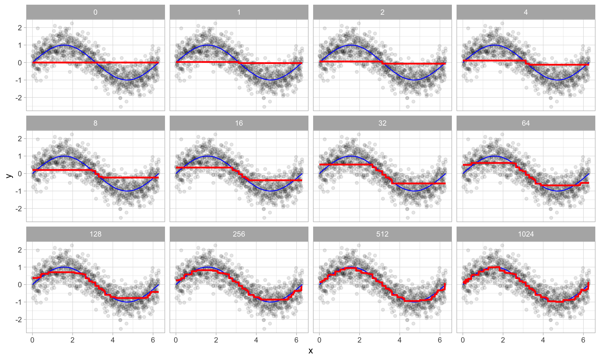
Gradient descent
Gradient descent is the optimization mechanism behind gradient boosting. Instead of directly predicting the target variable, each new tree is fitted to the negative gradient of the loss function with respect to the current predictions. This ensures that each update moves the model in the direction that most reduces the loss.
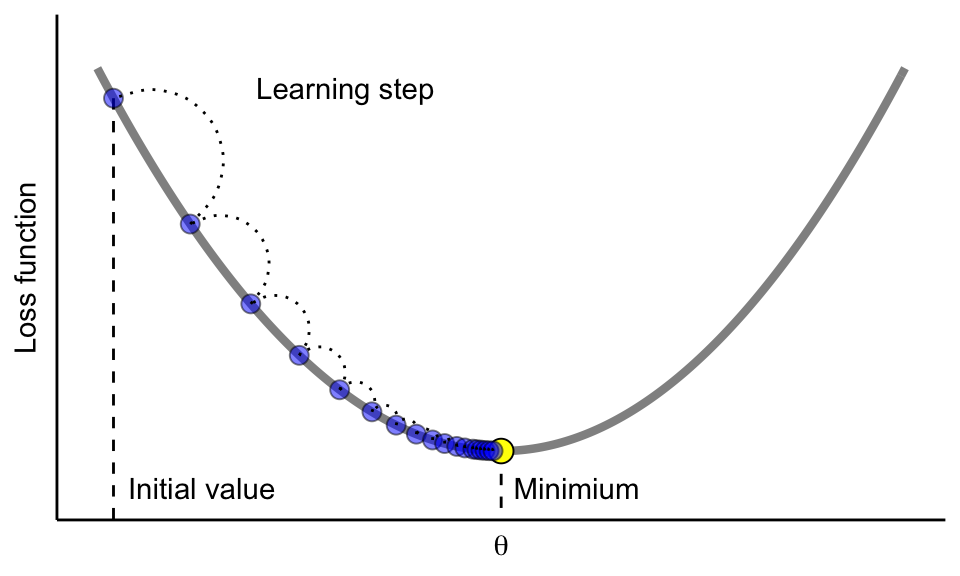
The learning rate controls the size of each update step. If the learning rate is too small, many iterations (trees) are required to reach the minimum. If it is too large, the algorithm may overshoot the minimum and fail to converge.
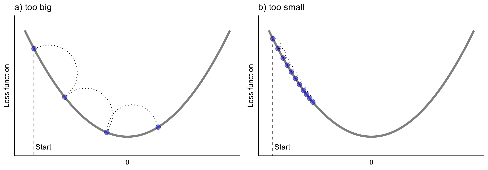
7.1 Hyperparameters
trees
Number of trees in the ensemble. More trees allow the model to learn more complex patterns, but increase computation time and the risk of overfitting.learn_rate
Learning rate (shrinkage) controls how much each tree contributes to the final model. Smaller values improve generalization but require more trees; larger values speed up training but may cause overfitting.mtry
Number of predictors randomly selected at each split. Smaller values increase randomness and reduce correlation between trees; larger values allow each tree to use more predictors.tree_depth
Maximum depth of each tree. Shallow trees act as weak learners and reduce overfitting, while deeper trees can model more complex interactions.min_n
Minimum number of observations required in a terminal node. Larger values produce smoother, more conservative trees; smaller values allow the model to fit finer details.loss_reduction
Minimum reduction in loss required to make a further split. Larger values make the model more conservative and help prevent unnecessary splits.
7.2 Codes
# Tunable Gradient Boosting model (XGBoost) ---------------------
# 1. Model specification with tunable hyperparameters
mdl_tune_GB <-
boost_tree(
trees = tune(), # number of trees
learn_rate = tune(), # learning rate
mtry = tune(), # number of predictors per split
tree_depth = tune(), # maximum depth
min_n = tune(), # minimum node size
loss_reduction = tune() # gamma
) |>
set_engine("xgboost") |>
set_mode("regression")
# 2. Workflow (recipe + model)
wflow_tune_GB <-
workflow() |>
add_recipe(rcp_Norm) |>
add_model(mdl_tune_GB)
# 3. Parameter set (finalized with training data)
param_tune_GB <-
extract_parameter_set_dials(wflow_tune_GB) |>
finalize(df_Train)
# 4. Bayesian tuning
set.seed(123)
tune_GB <-
tune_bayes(
wflow_tune_GB,
resamples = cv_folds_Norm,
param_info = param_tune_GB,
initial = 10, # initial random points
iter = 30, # Bayesian iterations
metrics = metric_set(rmse, rsq, mae),
control = control_bayes(
verbose = TRUE,
save_pred = TRUE
)
)
# 5. Best hyperparameters
show_best(tune_GB, metric = "rmse")# A tibble: 5 × 13
mtry trees min_n tree_depth learn_rate loss_reduction .metric .estimator
<int> <int> <int> <int> <dbl> <dbl> <chr> <chr>
1 8 1498 8 14 0.0136 2.13e-10 rmse standard
2 9 1253 3 15 0.0365 5.70e-10 rmse standard
3 11 1207 18 14 0.0515 5.80e- 2 rmse standard
4 11 445 14 10 0.0245 1 e-10 rmse standard
5 11 1999 19 15 0.0631 1.98e- 8 rmse standard
# ℹ 5 more variables: mean <dbl>, n <int>, std_err <dbl>, .config <chr>,
# .iter <int>best_prams_GB <- select_best(tune_GB, metric = "rmse")
# 6. Final GB model with tuned hyperparameters
wflow_final_GB <-
finalize_workflow(wflow_tune_GB, best_prams_GB)
fit_final_GB <- fit(wflow_final_GB, df_Train)
# 7. Predict
pred_final_GB <-
predict(fit_final_GB, df_Test) |>
bind_cols(df_Test |> dplyr::select(evapo_r))
# 8. Metrics
metrics(pred_final_GB, truth = evapo_r, estimate = .pred)# A tibble: 3 × 3
.metric .estimator .estimate
<chr> <chr> <dbl>
1 rmse standard 2.59
2 rsq standard 0.930
3 mae standard 1.50 # 9. Plot predicted vs observed
ggplot(pred_final_GB, aes(x = evapo_r, y = .pred)) +
geom_point(alpha = 0.6, color = color_RUB_blue) +
geom_abline(
intercept = 0,
slope = 1,
linetype = "dashed",
color = color_TUD_pink
) +
labs(
x = "Observed",
y = "Predicted"
)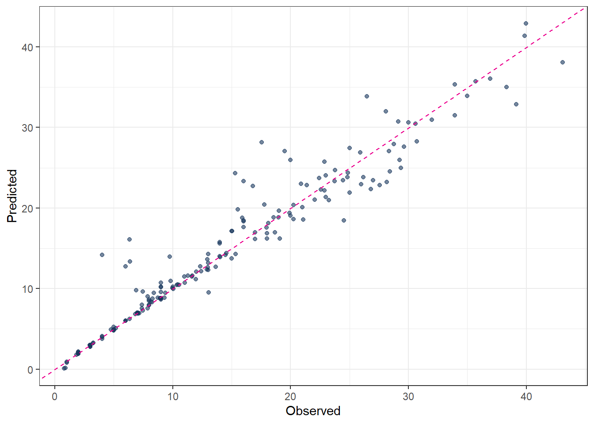
8 Support Vector Machines (SVM)
Support Vector Machines were developed in the 1990s by Vladimir N. Vapnik and his colleagues. Their foundational work was published in the paper “Support Vector Method for Function Approximation, Regression Estimation, and Signal Processing” [@SVM_Vapnik_1996].
The term “support vectors” refers to a subset of the training data that plays a crucial role in defining the final model. Unlike many traditional training strategies that use all observations equally, SVM focuses only on those data points that lie outside or on the boundary of a tolerance region around the regression function. These points are typically not very close to the regression line (or regression tube) and are the most informative for determining the model.
In support vector regression (SVR), errors are measured using the \(\epsilon\)-insensitive loss function, which is defined as
\[ L_{\epsilon}(y, f(x)) = \begin{cases} 0, & \text{if } |y - f(x)| \le \epsilon \\ |y - f(x)| - \epsilon, & \text{if } |y - f(x)| > \epsilon \end{cases} \]
This means that deviations smaller than \(\epsilon\) are ignored and treated as zero error. Only observations whose absolute residual exceeds \(\epsilon\) contribute to the loss and can become support vectors. As a result, many training points inside the \(\epsilon\)-tube do not influence the fitted model.
Kernel function
In addition to this core idea, kernel function is also a key concept in SVMs, especially for regression problems. A kernel function implicitly maps the input data into a higher-dimensional feature space, where a linear or nonlinear model can be fitted. The shape and flexibility of the final fitted function depend strongly on the chosen kernel. Commonly used kernels include the linear kernel, the polynomial kernel, and the radial basis function (RBF) kernel. For specific tasks, selecting an appropriate kernel is critical for good performance.
Originally, SVMs were mainly designed for binary classification problems. However, by combining the support vector idea with kernel functions, regression problems can also be solved effectively using support vector regression.
Last but not least, the support vectors are the points lying on or outside the ε-tube. This highlights an important distinction compared to other optimization methods that minimize MAE using all data points. SVR does not directly “look for the best-fitting line.” Instead, it searches for the simplest line that the data cannot reject.
8.1 Hyperparameters
Support Vector Machines rely on several hyperparameters that control model complexity, smoothness, and generalization performance. The most important hyperparameters and their roles are described below.
- ‘cost’ (C): The cost parameter, usually denoted by C, controls the trade-off between model flatness and the penalty for observations that lie outside the \(\epsilon\)-tube.
- A large C strongly penalizes large deviations, forcing the model to fit the training data closely. This can lead to low bias but increases the risk of overfitting.
- A small C allows more violations of the \(\epsilon\)-tube, resulting in a smoother function with higher bias but better generalization.
- It is common to all SVM kernels.
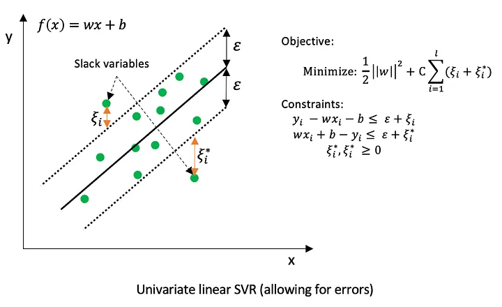
8.1.1 Linear kernel
For the linear kernel, the only kernel-related hyperparameter is cost (C). The resulting model is a linear function of the input variables, making it suitable for problems with approximately linear relationships or high-dimensional feature spaces.
8.1.2 Polynomial kernel
The polynomial kernel introduces additional flexibility by modeling nonlinear relationships. Its main hyperparameters are:
cost(C): controls the penalty for errors, as described above.degree: specifies the degree of the polynomial. Higher values allow more complex nonlinear patterns but increase the risk of overfitting.scale_factor: scales the input features before applying the polynomial transformation and influences the curvature of the fitted function.
8.1.3 Radial Basis Function (RBF) kernel
The RBF kernel is one of the most widely used kernels due to its flexibility. Its key hyperparameters are:
cost(C): controls the trade-off between smoothness and fitting accuracy.rbf_sigma: determines the width of the Gaussian kernel.- A small
rbf_sigmaleads to highly localized influence of individual observations and very flexible models. - A large
rbf_sigmaproduces smoother functions with broader influence of each data point.
- A small
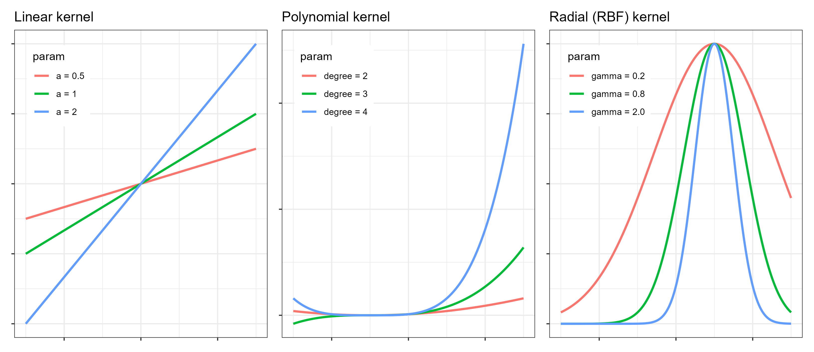
8.2 Codes
8.2.1 Linear kernel
# 1. Define tunable SVM model
mdl_tune_SVM_linear <-
svm_linear(
cost = tune() # C penalty
) |>
set_engine("kernlab") |>
set_mode("regression")
# 2. Workflow (recipe + model)
wflow_tune_SVM_linear <-
workflow() |>
add_recipe(rcp_Norm) |>
add_model(mdl_tune_SVM_linear)
# 3. Bayesian tuning
set.seed(123)
tune_SVM_linear <-
tune_bayes(
wflow_tune_SVM_linear,
resamples = cv_folds_Norm,
metrics = metric_set(rmse, rsq, mae),
initial = 10,
iter = 40,
control = control_bayes(save_pred = TRUE)
)
# 4. Best hyperparameters
show_best(tune_SVM_linear, metric = "rmse")# A tibble: 5 × 8
cost .metric .estimator mean n std_err .config .iter
<dbl> <chr> <chr> <dbl> <int> <dbl> <chr> <int>
1 11.3 rmse standard 3.95 10 0.198 Iter3 3
2 13.3 rmse standard 3.95 10 0.198 Iter8 8
3 15.7 rmse standard 3.95 10 0.198 Iter1 1
4 21.4 rmse standard 3.95 10 0.198 Iter4 4
5 5.90 rmse standard 3.95 10 0.198 Iter6 6best_params_SVM_linear <- select_best(tune_SVM_linear, metric = "rmse")
# 5. Final model
wflow_final_SVM_linear <-
finalize_workflow(wflow_tune_SVM_linear, best_params_SVM_linear)
fit_final_SVM_linear <- fit(wflow_final_SVM_linear, df_Train) Setting default kernel parameters # 6. Prediction and evaluation
pred_final_SVM_linear <-
predict(fit_final_SVM_linear, df_Test) |>
bind_cols(df_Test |> dplyr::select(evapo_r))
metrics(pred_final_SVM_linear, truth = evapo_r, estimate = .pred)# A tibble: 3 × 3
.metric .estimator .estimate
<chr> <chr> <dbl>
1 rmse standard 4.69
2 rsq standard 0.771
3 mae standard 3.00 # 7. Plot predicted vs observed
ggplot(pred_final_SVM_linear, aes(x = evapo_r, y = .pred)) +
geom_point(alpha = 0.6, color = color_RUB_blue) +
geom_abline(
intercept = 0,
slope = 1,
linetype = "dashed",
color = color_TUD_pink
) +
labs(x = "Observed", y = "Predicted")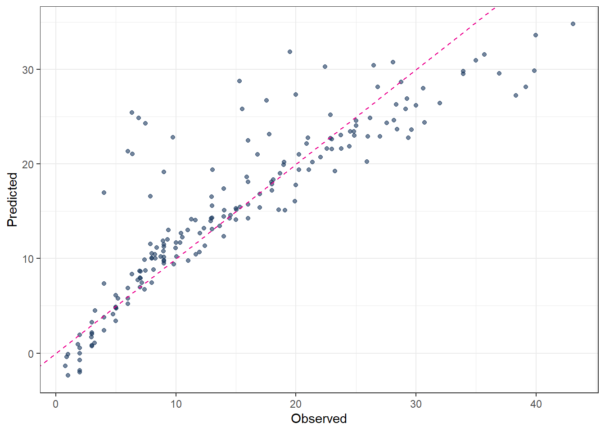
8.2.2 Polynomial kernel
# 1. Define tunable SVM model
mdl_tune_SVM_poly <-
svm_poly(
cost = tune(), # C penalty
degree = tune(), # polynomial degree
scale_factor = tune() # kernel scale
) |>
set_engine("kernlab") |>
set_mode("regression")
# 2. Workflow (recipe + model)
wflow_tune_SVM_poly <-
workflow() |>
add_recipe(rcp_Norm) |>
add_model(mdl_tune_SVM_poly)
# 3. Bayesian tuning
set.seed(123)
tune_SVM_poly <-
tune_bayes(
wflow_tune_SVM_poly,
resamples = cv_folds_Norm,
metrics = metric_set(rmse, rsq, mae),
initial = 10,
iter = 40,
control = control_bayes(save_pred = TRUE)
)
# 4. Best hyperparameters
show_best(tune_SVM_poly, metric = "rmse")# A tibble: 5 × 10
cost degree scale_factor .metric .estimator mean n std_err .config .iter
<dbl> <int> <dbl> <chr> <chr> <dbl> <int> <dbl> <chr> <int>
1 16.7 3 0.0392 rmse standard 2.29 10 0.135 Iter22 22
2 9.64 3 0.0496 rmse standard 2.30 10 0.135 Iter23 23
3 5.45 3 0.0594 rmse standard 2.30 10 0.132 Iter19 19
4 2.50 3 0.0807 rmse standard 2.30 10 0.131 Iter15 15
5 8.42 3 0.0532 rmse standard 2.30 10 0.135 Iter29 29best_params_SVM_poly <- select_best(tune_SVM_poly, metric = "rmse")
# 5. Final model
wflow_final_SVM_poly <-
finalize_workflow(wflow_tune_SVM_poly, best_params_SVM_poly)
fit_final_SVM_poly <- fit(wflow_final_SVM_poly, df_Train)
# 6. Prediction and evaluation
pred_final_SVM_poly <-
predict(fit_final_SVM_poly, df_Test) |>
bind_cols(df_Test |> dplyr::select(evapo_r))
metrics(pred_final_SVM_poly, truth = evapo_r, estimate = .pred)# A tibble: 3 × 3
.metric .estimator .estimate
<chr> <chr> <dbl>
1 rmse standard 2.69
2 rsq standard 0.924
3 mae standard 1.59 # 7. Plot predicted vs observed
ggplot(pred_final_SVM_poly, aes(x = evapo_r, y = .pred)) +
geom_point(alpha = 0.6, color = color_RUB_blue) +
geom_abline(
intercept = 0,
slope = 1,
linetype = "dashed",
color = color_TUD_pink
) +
labs(x = "Observed", y = "Predicted")8.2.3 Radial Basis Function (RBF) kernel
# 1. Define tunable SVM model
mdl_tune_SVM_rbf <-
svm_rbf(
cost = tune(), # C penalty
rbf_sigma = tune() # kernel width
) |>
set_engine("kernlab") |>
set_mode("regression")
# 2. Workflow (recipe + model)
wflow_tune_SVM_rbf <-
workflow() |>
add_recipe(rcp_Norm) |>
add_model(mdl_tune_SVM_rbf)
# 3. Bayesian tuning
set.seed(123)
tune_SVM_rbf <-
tune_bayes(
wflow_tune_SVM_rbf,
resamples = cv_folds_Norm,
metrics = metric_set(rmse, rsq, mae),
initial = 10,
iter = 40,
control = control_bayes(save_pred = TRUE)
)
# 4. Best hyperparameters
show_best(tune_SVM_rbf, metric = "rmse")# A tibble: 5 × 9
cost rbf_sigma .metric .estimator mean n std_err .config .iter
<dbl> <dbl> <chr> <chr> <dbl> <int> <dbl> <chr> <int>
1 30.8 0.0430 rmse standard 2.28 10 0.137 Iter11 11
2 28.9 0.0433 rmse standard 2.29 10 0.138 Iter16 16
3 29.3 0.0427 rmse standard 2.29 10 0.138 Iter20 20
4 27.5 0.0434 rmse standard 2.29 10 0.138 Iter21 21
5 28.0 0.0468 rmse standard 2.29 10 0.135 Iter15 15best_params_SVM_rbf <- select_best(tune_SVM_rbf, metric = "rmse")
# 5. Final model
wflow_final_SVM_rbf <-
finalize_workflow(wflow_tune_SVM_rbf, best_params_SVM_rbf)
fit_final_SVM_rbf <- fit(wflow_final_SVM_rbf, df_Train)
# 6. Prediction and evaluation
pred_final_SVM_rbf <-
predict(fit_final_SVM_rbf, df_Test) |>
bind_cols(df_Test |> dplyr::select(evapo_r))
metrics(pred_final_SVM_rbf, truth = evapo_r, estimate = .pred)# A tibble: 3 × 3
.metric .estimator .estimate
<chr> <chr> <dbl>
1 rmse standard 2.81
2 rsq standard 0.918
3 mae standard 1.71 # 7. Plot predicted vs observed
ggplot(pred_final_SVM_rbf, aes(x = evapo_r, y = .pred)) +
geom_point(alpha = 0.6, color = color_RUB_blue) +
geom_abline(
intercept = 0,
slope = 1,
linetype = "dashed",
color = color_TUD_pink
) +
labs(x = "Observed", y = "Predicted")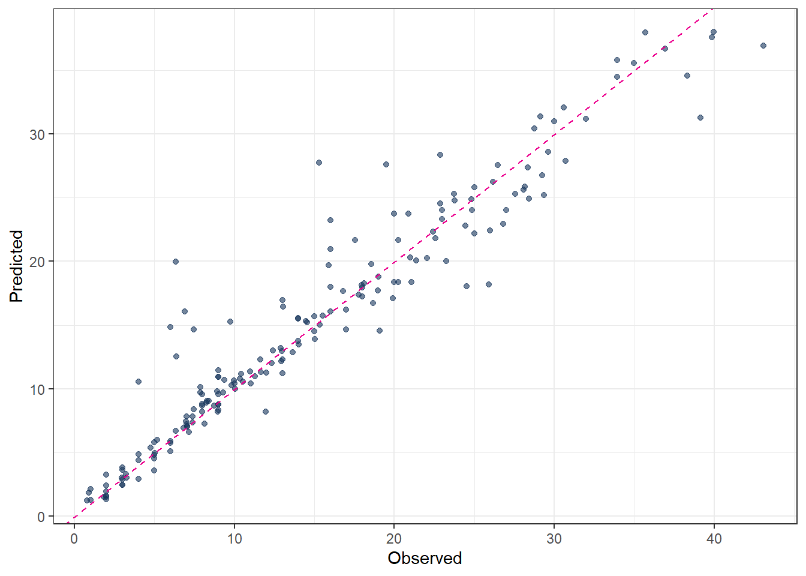